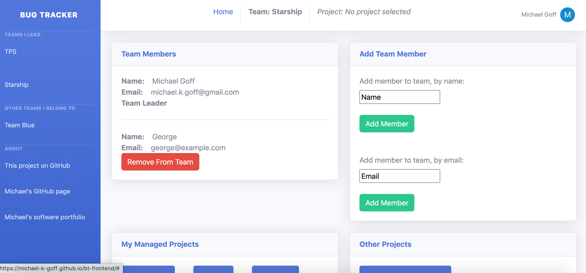
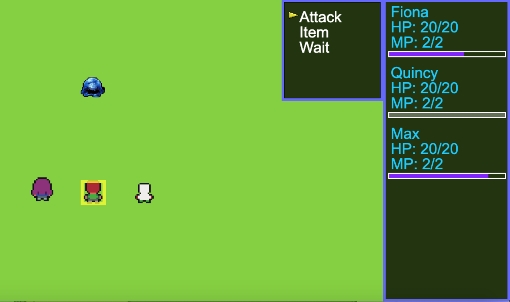
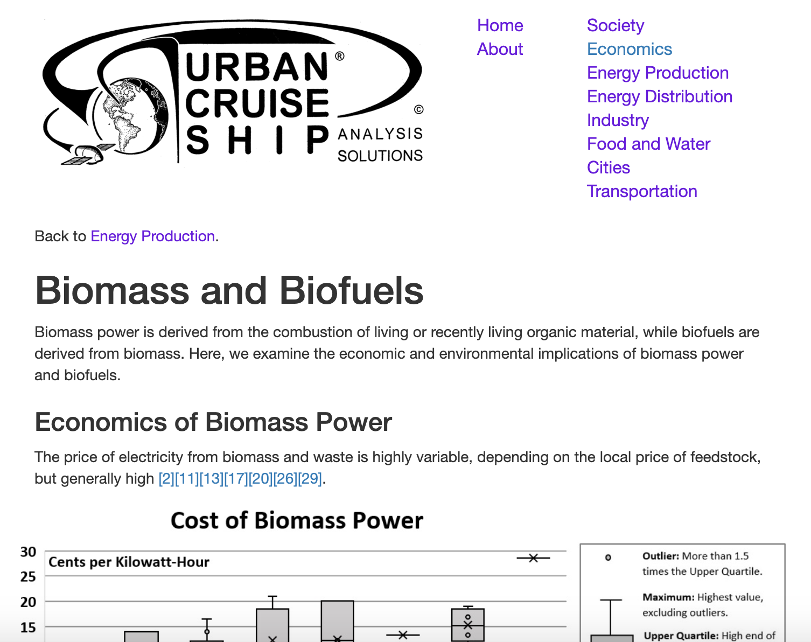
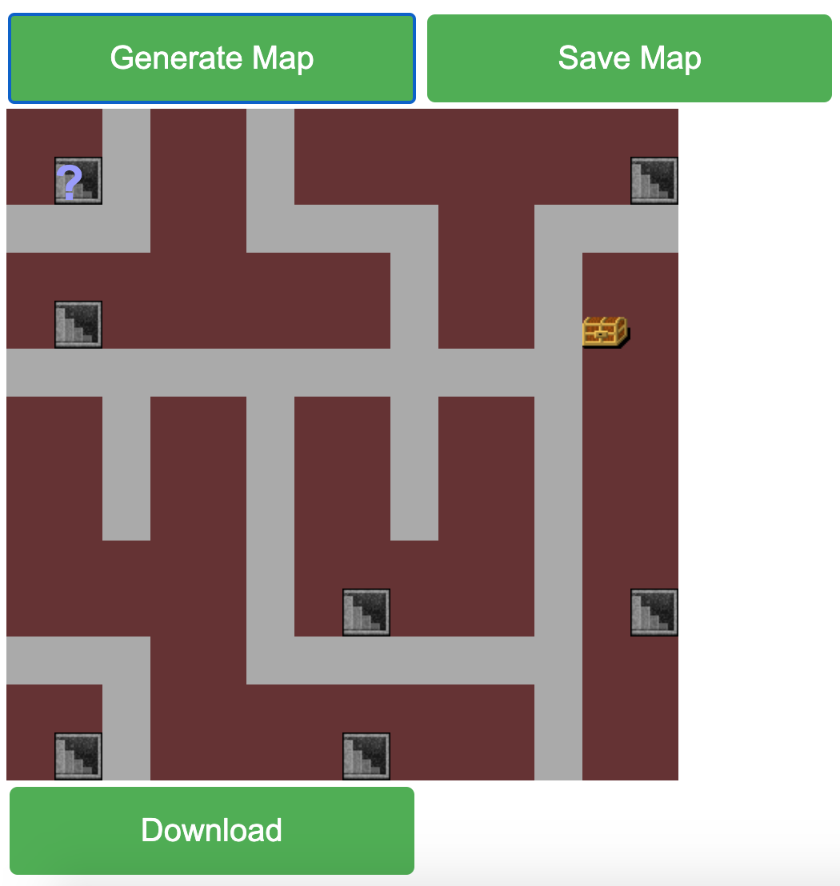

An app for team-based tracking of projects and issues. Bug Tracker is built in React, Node.js, with Auth0 authentication, a PostgresQL database, and styled with a Bootstrap theme. See the GitHub repo.

A role-playing game featuring a complex battle system, expansive world, and immersive story. See the live deployment and GitHub repo.

Urban Cruise Ship is a think tank and consultancy in energy policy. The business website is a custom node.js app which presents research and reference material to the reader.

An implementation of randomized Prim's algorithm for generation of random mazes. See the GitHub repo.
React Dashboard: a personal to-do list implemented in React.
Neural network: an implementation of a neural network to classify the MNIST handwritten digit data set. It is implemented in python, using the numpy and pandas libraries.
Q Learning: Implementation of Q learning and deep Q learning algorithms. These are forms of reinforcement learning that have been applied to game playing.
Map Generation: A random dungeon generator, perhaps for use in a video game. A genetic algorithm implemented in Python, powered by self-driving automata, works to increase map compactness.
Repair the Cosmos: A resource acquisition incremental game, built for the winter 2020 PIGSquad game jam.
Bosch Data: Data on a manufacturing pipeline provided by Bosch, analyzed with the Portland Data Science Group.